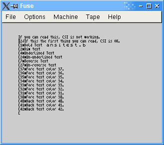
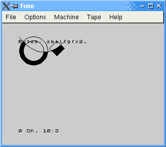
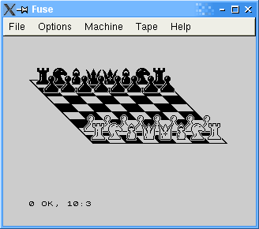

CONTENIDOS DE z88dk
No, en esta ocasión no vamos a hablar de qué contiene cada directorio de
la instalación de z88dk, o cuál es la función de cada uno de los ejecutables.
Vamos a intentar enumerar qué es lo que nos proporciona z88dk a nivel de
código, es decir, a nivel de librería. Esto es necesario porque la documentación
es bastante pobre en lo que respecta a la descripción de las funciones que
podemos utilizar, o de los archivos .h y su contenido. De hecho, este punto no
se explica en absoluto, por lo que en un primer momento somos incapaces de
determinar las posibilidades que se nos ofrecen.
Sin duda alguna, el lugar donde más información encontraremos sobre las
funciones disponibles es en los archivos de cabecera (archivos .h). Ya se
comentó en la anterior entrega que no era la intención de esta serie de
artículos el explicar los entresijos del lenguaje C, pues hay en la
red tutoriales muy buenos sobre el tema, y además no acabaríamos nunca.
Baste con decir que los archivos de cabecera nos proporcionan los prototipos
de las funciones (nombre y parámetros) y la definición de las variables que
la librería pone a nuestra disposición. Deberemos incluir en nuestro código los
archivos de cabecera que contengan las funciones que queramos utilizar para que
durante el proceso de compilación se enlace con la parte de la librería adecuada.
Sin más preámbulo procedamos a realizar una pequeña descripción de los
principales archivos de cabecera incluidos con z88dk, siempre y
cuando el contenido sea importante en la programación de aplicaciones para
Spectrum. Estos ficheros se encuentran en el directorio include,
donde podemos localizar, además de algunos .h, unos pocos directorios... pero,
¿qué podemos encontrar entre tanta hache?
Como vimos en el capítulo anterior que z88dk permitía programar para
diversas máquinas; así pues, nos centramos en funcionalidades que a primera
vista podrán ser utilizadas en el Spectrum. Esto hace que descartemos todos
los archivos incluidos dentro de los directorios de la carpeta include.
Y de esta carpeta, solo explicaremos algunos de los archivos.h incluidos.
Así pues, comencemos con archivos de cabecera que proporcionan funciones más
o menos estándar, que podríamos encontrar en la mayoría de los compiladores de C:
- stdio.h: tiene el mismo nombre que la librería estándar de entrada y
salida de C, y de hecho cumple con el mismo cometido. Incluye, como en el
caso de la librería de C, funciones para escribir en pantalla y leer de teclado,
tanto variables de todo tipo como carácteres individuales. También hay
funciones para... ¡lectura y escritura de ficheros!. Ya veremos en
el futuro para qué sirve todo esto, o si es posible utilizarlo para generar
código para el Spectrum. Por último podemos encontrar unas funciones que no son
estándar, pero que son muy útiles para juegos: una función que devuelve la
tecla que se está pulsando en ese momento, otra que no termina hasta que no
se pulsa una tecla, etc.
- stdlib.h: equivalente a la librería estándar de C. Contiene funciones
para generar números aleatorios, detener el programa durante un
tiempo determinado, o convertir enteros a flotantes y viceversa.
- float.h: rutinas para el manejo de número en punto flotante, como
valor absoluto, redondeo hacia abajo y hacia arriba (floor y ceiling),
etc. También se definen una serie de constantes empleadas por math.h.
- iso646.h: contiene definición de constantes asignando nombres a
las operaciones booleanas como &&, ||, &=, etc.
- malloc.h: funciones para el manejo de memoria (reserva y liberación,
etc).
- math.h: funciones matemáticas, como senos, cosenos,
logaritmos, potencias...
- limits.h: contiene constantes que definen el valor máximo y mínimo
para los tipos de datos como el entero, el carácter (recordemos que en
C los caracteres son equivalentes a los enteros), etc.
- string.h: equivalente al string.h del lenguaje C estándar. Contiene
métodos para crear cadenas, concatenarlas, estimar su longitud, compararlas,
obtener posiciones de caracteres dentro de cadenas, obtener tokens, etc. Es
curioso resaltar que también se incluye el archivo strings.h, el cual tan
solo contiene un #include
. El autor del presente texto supone que la
causa será mantener la compatibilidad con programas realizados con
versiones anteriores de la librería.
| 
|
| Uno de los sencillos ejemplos que acompañan a
z88dk. El texto en acción.
|
- ctype.h: funciones para el manejo de carácteres. Permiten comprobar si
un carácter es un ASCII, es un carácter de control, es numérico, es
alfanumérico, es imprimible, está en mayúsculas o minúsculas, etc. También
se permite pasar un carácter a mayúsculas o minúsculas.
El cómo podremos utilizar estas funciones más o menos estándar en nuestros
programas de Spectrum es algo que iremos desvelando en capítulos sucesivos.
Ahora nos fijamos en los archivos de cabecera más interesantes a priori, los que
permiten programación específica de gráficos, sonidos, sprites, cintas, etc.
- spectrum.h: funciones propias para el Spectrum. Tenemos en este
fichero un tipo estructura que define una cabecera de una cinta, y funciones
de manejo de cinta, para salvar o cargar bloques.
- graphics.h: rutinas gráficas básicas; dibujo de líneas, círculos,
cajas, puntos, rellenar figuras, borrar puntos, borrado de la pantalla (o
un área de la misma). Se permite tambien el empleo de XOR con puntos. El
XOR es una operación lógica que devuelve 1 si los dos operandos son distintos.
Se suele utilizar en gráficos para realizar mascaras, o para dibujar y
borrar sprites. Al final del fichero hay unas funciones no utilizables por
el Spectrum, como por ejemplo una para crear ventanas. Como se puede observar,
la mayoría de las rutinas gráficas de graphics.h se refieren al dibujo de
primitivas, lo cual se puede realizar sin ningún problema en BASIC, por lo que
en un principio parece bastante limitado.
| 
|
| Desde sencillas rutinas gráficas que podríamos
crear con el BASIC gracias a graphics.h...
|
- sound.h: rutinas para sonido de 1 bit, es decir, nada de
polifonías. Esto, una vez más (como en el caso de graphics.h) es bastante
limitado. Se puede producir un sonido durante un tiempo determinado, ya sea
indicando periodo o frecuencia. También se pueden hacer sonar notas sucesivas
mediante una función que acepta como parámetro una cadena, que represente
la melodía.
- games.h: funciones interesantes, si lo que deseamos con z88dk es
crear juegos. Contiene funciones para el manejo de sprites (obtener un
sprite de la pantalla - función no terminada, dibujar un sprite de tamaño variable
en la pantalla, funciones para joysticks, y definición de constantes referidas
a operaciones lógicas con los sprites). Las variables que representan a
los sprites se almacenan como punteros a void, es decir, como punteros a
una dirección de memoria en los que no se especifica el formato. Ya veremos cual
es dicho formato en próximos artículos. Lo que queda claro es que quizás el
apoyo para la realización de juegos es algo pobre. No hay nada referente a
scroll, no hay nada referente a colisiones, etc.
| 
|
| ... hasta cosas más complicadas, e incluso
sprites, gracias a games.h.
|
- rs232.h: para el manejo del interfaz serie. El spectrum dispone de
uno de estos. Aplicaciones de esto las podemos encontrar en internet, como
la conexión mediante RS232 entre un Sinclair QL y un Spectrum
o el terminal Spectrum que en su día intento llevar a cabo Santiago
Romero.
- debug.h: contiene dos prototipos de funciones de depuración. Una
permite el desensamblado de una línea de código, y la otra permite examinar el
contenido de n posiciones de la pila a partir de una dirección dada.
- assert.h: contiene otra función de depuración. Esta función admite un
parámetro, en forma de expresión. Si la expresión no evalúa a cero no ocurre
nada y el programa sigue ejecutándose. En caso contrario, el programa se
detiene, indicándose la línea y el fichero donde se ha producido dicha
detención.
- time.h: funciones de tiempo, aunque lo que nos interesa en este
archivo es la definición de una constante que nos indica los ciclos por segundo
de las distintas máquinas, como el Spectrum o el ZX81, por ejemplo.
Esto es, por lo tanto, y a grandes rasgos, lo que se nos ofrece. Será el
cometido del presente tutorial el, a lo largo de las sucesivas entregas,
permitirnos saber si todas estas funcionalidades serán suficientes para
realizar programas o juegos para nuestro Spectrum de forma asequible,
entendiendo por asequible mayor facilidad al usar el lenguaje C que
el lenguaje ensamblador. Es decir, se va a tener que programar de todas formas,
pero siempre es mejor hacerlo en un lenguaje de alto nivel.
|
SIEW |
|